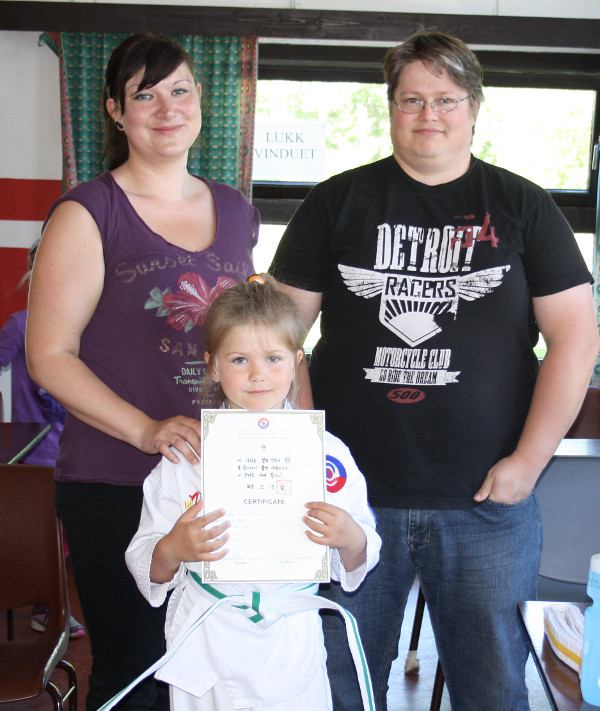

Innlegg
En prat med Steffen Persvold

Det andre intervjuet var med Steffen Persvold og hans datter Hedda Marie Persvold.
De var glade for at Hedda Marie hadde startet på Tae Kwon Do og at hun hadde klart graderingen. Etter at hun hadde startet mente hun at hun hadde blitt flinkere på teknikkene sine.
Hedda Marie sa at hun var glad for å kunne grader, få ett nytt belte og det var morsomt å lære nye ting. Hun hadde lært seg å konsentrere seg bedre og fått nye venner gjennom Tae Kwon Do.